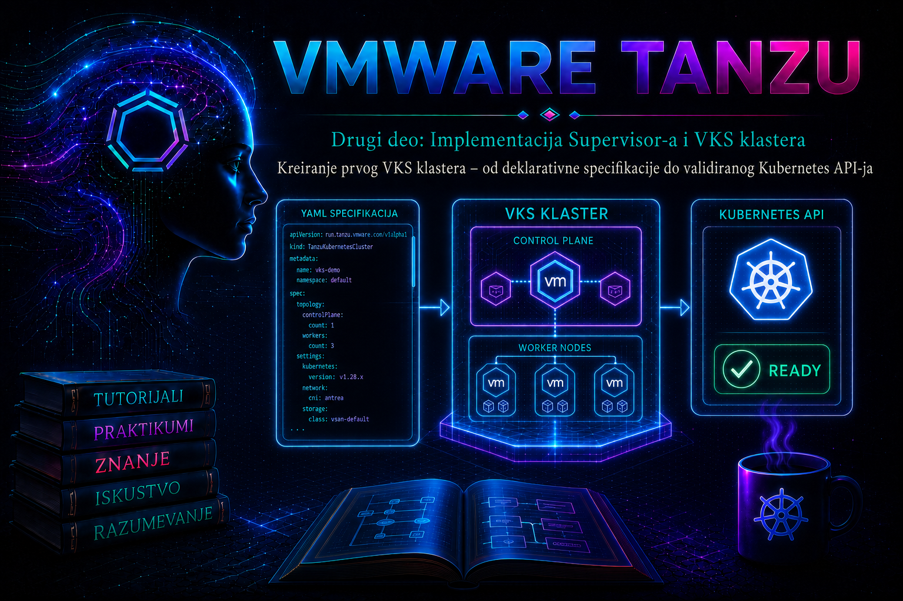

VMware & Tanzu

Kreiranje prvog vSphere Kubernetes Service (VKS) klastera predstavlja trenutak u kome se prethodno pripremljeni Supervisor Namespace, identitet, kvote, VM klase, storage politike i mrežne usluge pretvaraju u namenski Kubernetes klaster za aplikaciona opterećenja. Administrator ne klonira ručno virtuelne mašine. On u Supervisor API šalje deklarativni Cluster objekat, a kontroleri zatim usklađuju željeno i stvarno stanje: biraju odobrenu Kubernetes verziju, kreiraju kontrolne i radne čvorove preko VM Service-a, povezuju mrežu i storage, izvršavaju bootstrap i objavljuju Kubernetes API endpoint.
Ova lekcija obrađuje aktuelni Supervisor/VKS model i cluster.x-k8s.io/v1beta1 API zasnovan na podrazumevanoj ili odobrenoj ClusterClass definiciji. U starijoj dokumentaciji isti proizvodni tok može se nazivati Tanzu Kubernetes Grid Service ili TKG Service, a Kubernetes izdanja Tanzu Kubernetes Release (TKr). U novijim VKS izdanjima koristi se termin VMware Kubernetes Release (VKr) i resurs KubernetesRelease. Tačan API, skup promenljivih, naziv podrazumevane ClusterClass i podržane mogućnosti zavise od VKS/Supervisor verzije. Manifest iz drugog okruženja zato se ne primenjuje bez provere lokalnog OpenAPI schema prikaza i zvanične dokumentacije tog izdanja.
Važna granica modela: komande tanzu cluster create i flat konfiguracioni fajlovi pripadaju standalone TKG Management Cluster toku i nisu postupak kreiranja VKS klastera na Supervisor-u. VKS klaster se kreira Kubernetes manifestom u vSphere Namespace-u, najčešće pomoću kubectl apply. U vSphere 8 pristup se tipično uspostavlja pomoću vSphere plugina za kubectl; u VMware Cloud Foundation 9 pristupni CLI tok je promenjen i koristi VCF CLI. Sama deklarativna specifikacija i dalje mora biti potvrđena prema API-ju koji Supervisor stvarno izlaže.
Od deklaracije do funkcionalnog Kubernetes API-ja
VKS koristi Cluster API obrazac: Cluster je ugovor o željenom stanju, a ne samo zapis da klaster postoji. ClusterClass obezbeđuje standardizovan šablon topologije i dozvoljenih promenljivih. Supervisor kontroleri čitaju specifikaciju, kreiraju povezane infrastrukturne i bootstrap objekte, a VM Operator realizuje virtuelne mašine u vSphere infrastrukturi. Reconciliation petlja periodično poredi deklarisano i stvarno stanje i pokušava da ukloni odstupanje.
| Sloj | Uloga u kreiranju | Dokaz koji administrator proverava |
|---|---|---|
| vSphere Namespace | Granica identiteta, kvota, VM klasa, storage politika i mrežnih resursa. | Korisnik vidi namespace kontekst i ima pravo da kreira Cluster; dodeljene klase i storage politike su dostupne. |
Cluster i ClusterClass |
Opisuju verziju, topologiju, replike i promenljive koje kontroleri usklađuju. | kubectl get/describe cluster, conditions, observed generation i spremne replike. |
| Kubernetes release | Povezuje podržanu Kubernetes verziju sa odgovarajućim OS image-om i komponentama. | Lokalni KubernetesRelease ili verzijski odgovarajući release resurs ima stanje koje dozvoljava kreiranje. |
| VM Service i VM Operator | Kreiraju i održavaju control-plane i worker VM objekte odgovarajuće klase i image-a. | VirtualMachine, Machine, vCenter Tasks/Events i VM Operator logovi napreduju bez trajne greške. |
| Mreža i control-plane endpoint | Dodeljuju adrese čvorovima, Pod/Service opsege i pristupačan API endpoint. | Endpoint je dodeljen, ruta i TLS veza rade, čvorovi se registruju, CNI i DNS su zdravi. |
| vSphere CSI i storage politika | Izlažu storage klase i dinamičko provisioniranje persistent volumena. | StorageClass postoji, PVC prelazi u Bound, Pod montira i koristi volumen. |
kubectl apply koji završi bez greške dokazuje samo da je API prihvatio objekat. Ne dokazuje da su image, kapacitet, mreža, load balancer, DNS ili storage funkcionalni. Klaster je spreman tek kada se poklope tri nivoa dokaza: Supervisor prikazuje stabilan Cluster i njegove mašine; vCenter potvrđuje zdrave VM objekte i infrastrukturne zadatke; pristup direktnom VKS API-ju potvrđuje zdrave čvorove i osnovne funkcije Kubernetes-a.
Preduslovi i administratorske odluke
Najčešći provisioning kvarovi nastaju pre slanja manifesta: namespace nema odgovarajuću kvotu, VM klasa ili storage politika nisu dodeljene, release nije dostupan, DRS nije potpuno automatizovan, nema slobodnih adresa ili operator radi u pogrešnom kontekstu. Pre promene se zato pravi dokaziva pre-check kontrola.
| Oblast | Obavezna provera | Posledica pogrešne odluke |
|---|---|---|
| Kompatibilnost | Supervisor, VKS servis, vCenter/ESXi, kubectl i pristupni plugin/CLI odgovaraju podržanoj matrici; izabrani release je dostupan. |
Admission odbijanje, nedostupan image, neuspešan bootstrap ili nepodržan klaster. |
| Namespace politika | Dodeljeni su operatori, kvote, VM klase, Content Library/image pristup i storage politike. | Objekat postoji, ali se VM ne kreiraju ili PVC ne može da se provisionira. |
| Compute i DRS | Postoje CPU, memorija i prostor za sve čvorove, kvar hosta i privremene rolling-update mašine; vSphere DRS je uključen i podešen na Fully Automated gde to Supervisor zahteva. | Mašine ostaju Pending/Provisioning; OVF deployment može propasti. |
| Mreža | Slobodne IP/VIP adrese, DNS, NTP, gateway, MTU i firewall putanje postoje; Pod i Service CIDR se ne preklapaju sa routiranim mrežama. | VM postoji, ali se čvor ne priključuje; API, CNI ili DNS ostaju nedostupni. |
| Dostupnost | Produkcioni control plane koristi neparan broj replika, tipično tri, i failure-domain/zone raspored koji infrastruktura zaista podržava. | Jedan control-plane čvor nema redundansu; dva nisu bezbedan kompromis za etcd kvorum. |
| Bezbednost | Namenski identitet ima najmanja potrebna namespace prava; kubeconfig i evidencija ne sadrže deljive tajne. | Neovlašćena potrošnja resursa, nesledljiv cluster-admin pristup ili curenje poverljivih podataka. |
Početna veličina radne ravni mora da uključi aplikacione zahteve i limite, sistemske DaemonSet-ove, monitoring i bezbednosne agente, rezervu za evakuaciju najmanje jednog worker-a i privremeni kapacitet tokom rolling update-a. Laboratorijski klaster može imati jedan control-plane i jedan worker čvor ako lokalna ClusterClass to dozvoljava. Referentni produkcioni primer koristi tri control-plane i tri worker čvora, ali to nije zamena za kapacitivni proračun.
Verzijski ugovor: v1alpha3, v1beta1, VKr i pristupni alati
Stariji run.tanzu.vmware.com/v1alpha3 TanzuKubernetesCluster manifesti imaju istorijsku vrednost, ali se ne koriste kao podrazumevani obrazac za novu lekciju. Broadcom dokumentacija za podržana novija izdanja preporučuje cluster.x-k8s.io/v1beta1 Cluster API. Migracija nije prosta zamena apiVersion reda: topologija, promenljive, klase i release selekcija imaju drugačiji ugovor.
- Na vSphere 8/VKS 3.x okruženjima operator obično koristi
kubectl vsphere login; dostupnost komande zavisi od instaliranog vSphere plugina zakubectl. - U VCF 9 tok autentikacije koristi VCF CLI. Ne treba izmišljati kompatibilnost starih login zastavica ako ih instalirani alat ne izlaže.
- Nazivi
KubernetesReleaseresursa i njihovih statusnih polja proveravaju se direktno na Supervisor-u pomoćukubectl api-resources,kubectl explainikubectl get. - Promenljive kao što su VM klase, storage klase, Pod/Service CIDR i CNI moraju postojati u lokalnoj
ClusterClassšemi. Primer manifesta je referentni obrazac, ne univerzalni ugovor za svako izdanje.
Deklarativna specifikacija i kontrola promene
Manifest je infrastrukturni kod i mora imati vlasnika, change identifikator, peer review i istoriju. U Git se čuva specifikacija bez kubeconfig-a, lozinki, privatnih ključeva i dugotrajnih tokena. Pre primene se čuvaju izlazi koji dokazuju cilj, kontekst, podržani API i dostupne vrednosti. Server-side dry-run prolazi admission, schema validation i defaulting bez trajnog kreiranja objekta, ali ne može dokazati kasniji kapacitet, dodelu IP adresa ili uspešan OVF deployment.
Minimalni v1beta1 obrazac obično sadrži class, version, controlPlane.replicas i najmanje jedan workers.machineDeployments unos. Dodatne promenljive namerno nisu unapred „pogađane”: prvo se čita lokalna definicija, a zatim se manifest dopunjava tačnim imenima i tipovima.
apiVersion: cluster.x-k8s.io/v1beta1
kind: Cluster
metadata:
name: vks-prod-01
namespace: team-platform-prod
spec:
topology:
class: <LOCAL_DEFAULT_OR_APPROVED_CLUSTERCLASS>
version: <AVAILABLE_KUBERNETES_RELEASE>
controlPlane:
replicas: 3
workers:
machineDeployments:
- class: node-pool
name: workers
replicas: 3
variables:
- name: <VARIABLE_FROM_LOCAL_CLUSTERCLASS_SCHEMA>
value: <APPROVED_VALUE>Placeholder vrednosti su namerne zaštitne ograde. Pre zamene treba potvrditi tačan naziv ClusterClass, worker class, format release verzije i obavezne promenljive. Korišćenje tuđeg „gotovog” manifesta bez ove provere može proizvesti admission grešku ili, opasnije, uspešno kreirati klaster sa neodgovarajućom mrežom, klasom ili storage politikom.
Praćenje procesa i dokaz spremnosti
Napredak se prati iz Supervisor namespace konteksta. Najpre se posmatra Cluster, zatim control-plane i worker replike, Machine/VirtualMachine objekti, Events i vCenter Tasks. Kratkotrajni Pending ili Provisioning statusi mogu biti normalni. Incident postoji kada se condition ne menja duže od internog provisioning SLA, broj spremnih replika ne raste, isti warning event se ponavlja ili vCenter zadatak završava greškom.
kubectl -n team-platform-prod get cluster vks-prod-01 -o wide
kubectl -n team-platform-prod describe cluster vks-prod-01
kubectl -n team-platform-prod get machines,virtualmachines -o wide
kubectl -n team-platform-prod get events \
--sort-by=.metadata.creationTimestamp | tail -n 50Read-only komande iznad bezbedne su za produkciju u okviru dodeljenih prava. Events su vremenski ograničen trag i treba ih sačuvati dok incident traje. Ručno brisanje VM-a u vCenter-u, Machine objekta ili finalizer-a nije dijagnostika: može pokrenuti novu reconciliation operaciju, izgubiti dokaz ili ostaviti napušten disk, adresu i load balancer resurs.
Integrisani praktikum: prvi VKS klaster na Supervisor-u
Poslovni kontekst. Platform tim obezbeđuje produkcioni VKS klaster vks-prod-01 za internu aplikacionu platformu. Klaster pripada namespace-u team-platform-prod, koji je pripremljen u prethodnim lekcijama. Cilj je da se iz kontrolisane deklaracije dobije validiran Kubernetes API sa tri control-plane i tri worker čvora.
Topologija. Administratorska Linux stanica pristupa Supervisor Control Plane adresi SUPERVISOR-CP.example.internal. Namespace ima odobrene VM klase, storage politiku, kvote i mrežu. Pod CIDR, Service CIDR, API VIP, CNI i storage vrednosti ne unose se dok lokalna ClusterClass šema i mrežni plan ne potvrde njihova polja.
Rizik. Primena manifesta kreira više VM objekata, troši kvotu i IP adrese i može aktivirati load balancer i storage operacije. Brisanje klastera kasnije može ukloniti njegove čvorove i povezane infrastrukturne resurse. Laboratorijski test se prvo izvodi u posebnom namespace-u; produkciona primena zahteva odobren change zapis.
-
Pripremiti zaštićeni radni prostor.
Komande se izvršavaju na administratorskoj Linux stanici pod ličnim, sledljivim nalogom. Ovaj korak menja samo lokalni filesystem.
install -d -m 700 "$HOME/vks-work/vks-prod-01"/{config,evidence,kubeconfig} cd "$HOME/vks-work/vks-prod-01" umask 077 stat -c '%A %n' . config evidence kubeconfigOčekivani rezultat: direktorijumi postoje, nisu dostupni drugim lokalnim korisnicima i spremni su za manifest, dokazne izlaze i kubeconfig. Kriterijum završetka je režim
drwx------za osnovni direktorijum i poddirektorijume. -
Prijaviti se i dokazati Supervisor namespace kontekst.
Za vSphere 8 koristi se instalirani vSphere plugin. Lozinka se unosi interaktivno i ne upisuje u shell istoriju ili manifest.
kubectl vsphere login \ --server SUPERVISOR-CP.example.internal \ --vsphere-username 'administrator@vsphere.local' kubectl config get-contexts kubectl config use-context team-platform-prod kubectl config current-context kubectl auth can-i create clusters.cluster.x-k8s.io \ -n team-platform-prodValidacija: aktivni kontekst mora biti namespace
team-platform-prod, a poslednja komanda mora vratitiyes. Ako kontekst nedostaje, ne pravi se ručni kubeconfig: proveravaju se SSO namespace dozvole i ponavlja login, jer se promene dozvola učitavaju prilikom naredne prijave. U VCF 9 koristi se dokumentovani VCF CLI login tok, a ne zastarelekubectl vspherepretpostavke. -
Snimiti pre-check stanje bez promene resursa.
kubectl version --client kubectl api-resources | grep -Ei 'clusterclass|kubernetesrelease|virtualmachine' kubectl get clusterclasses.cluster.x-k8s.io kubectl get kubernetesreleases 2>/dev/null || true kubectl get resourcequota,storageclass,virtualmachineclass -n team-platform-prod kubectl get clusters.cluster.x-k8s.io -n team-platform-prod kubectl get events -n team-platform-prod \ --sort-by=.metadata.creationTimestamp | tail -n 30Validacija: API mora izložiti
Cluster/ClusterClassresurse; postoji odobrena klasa i dostupan release; namespace vidi potrebnu VM klasu i storage politiku; kvota ima prostor za šest čvorova i rezervu. Pošto dostupnost nekih resursa i njihov scope zavise od izdanja,kubectl api-resourcesje autoritativna početna provera. -
Pročitati lokalni API ugovor.
kubectl explain cluster.spec.topology --api-version=cluster.x-k8s.io/v1beta1 kubectl explain cluster.spec.topology.workers.machineDeployments \ --api-version=cluster.x-k8s.io/v1beta1 kubectl get clusterclass <APPROVED_CLUSTERCLASS> -o yaml \ > evidence/01-clusterclass.yaml kubectl get kubernetesrelease <APPROVED_RELEASE> -o yaml \ > evidence/02-kubernetes-release.yamlValidacija: potvrđeni su worker class, obavezne promenljive, tipovi vrednosti, dozvoljene VM/storage/mrežne vrednosti i release stanje. Pre arhiviranja izlazi se pregledaju zbog interne infrastrukturne metapodatke; ne objavljuju se javno bez odobrenja.
-
Kreirati stvarni manifest bez tajni.
Sledeći primer treba dopuniti samo vrednostima potvrđenim u prethodnom koraku. Ako lokalna klasa zahteva više promenljivih, dodaju se prema njenoj šemi; ne kopiraju se nasumično iz drugog VKS izdanja.
apiVersion: cluster.x-k8s.io/v1beta1 kind: Cluster metadata: name: vks-prod-01 namespace: team-platform-prod labels: environment: production owner: platform-team spec: topology: class: <APPROVED_CLUSTERCLASS> version: <APPROVED_KUBERNETES_RELEASE> controlPlane: replicas: 3 workers: machineDeployments: - class: <WORKER_CLASS_FROM_CLUSTERCLASS> name: workers replicas: 3 variables: - name: <REQUIRED_VARIABLE_NAME> value: <APPROVED_TYPED_VALUE>Fajl se čuva kao
config/vks-prod-01.yamlsa režimom600. Placeholder-i moraju biti zamenjeni; komanda ispod treba da vrati prazan izlaz.chmod 600 config/vks-prod-01.yaml grep -nE '<[^>]+>' config/vks-prod-01.yaml || true grep -Eni 'password|token|private.?key|client.?secret' \ config/vks-prod-01.yaml || true -
Izvršiti server-side dry-run i pregled razlike.
Ovo je read-like admission provera: zahteva pravo za kreiranje, ali objekat se ne čuva i ne pokreće VM provisioning.
kubectl apply --server-side --dry-run=server \ --validate=strict \ -f config/vks-prod-01.yaml \ -o yaml > evidence/03-server-dry-run.yaml kubectl diff -f config/vks-prod-01.yaml || trueOčekivani rezultat: dry-run završava bez schema/admission greške, a diff prikazuje samo novi
Cluster. Izlazni kodkubectl diffmože biti1kada razlika postoji; to nije isto što i tehnička greška. Dry-run ne dokazuje slobodne IP adrese, vSphere kapacitet niti uspešan bootstrap. -
Primeniti odobrenu deklaraciju.
State-changing: sledeća komanda kreira klaster i infrastrukturne resurse.
kubectl apply --server-side \ --field-manager=tashizza-platform-admin \ -f config/vks-prod-01.yaml kubectl get cluster vks-prod-01 -n team-platform-prod -o yaml \ > evidence/04-cluster-accepted.yamlValidacija: API vraća
createdili odgovarajući uspešan rezultat; objekat ima UID i generation; manifest je tačno u namespace-uteam-platform-prod. Komanda se ne ponavlja panično ako provisioning traje, jerapplynije zamena za praćenje conditions. -
Pratiti reconciliation od najmanje invazivnih provera.
kubectl get cluster vks-prod-01 -n team-platform-prod \ -w kubectl get machines,virtualmachines -n team-platform-prod -o wide kubectl describe cluster vks-prod-01 -n team-platform-prod kubectl get events -n team-platform-prod \ --sort-by=.metadata.creationTimestamp | tail -n 60Očekivani rezultat: control-plane endpoint se dodeljuje, broj replika raste do tri plus tri, Machine i VM objekti prelaze iz provisioning u ready stanje. U vCenter Recent Tasks/Events mora postojati odgovarajući tok kreiranja bez neuspelih OVF, mrežnih ili permission zadataka. VM objekte pod kontrolom operatora ne treba ručno preimenovati, premestiti ili obrisati.
-
Prijaviti se direktno na VKS API.
Pošto Supervisor potvrdi spreman endpoint, operator dobija VKS kontekst kroz podržani identitetski tok.
kubectl vsphere login \ --server SUPERVISOR-CP.example.internal \ --vsphere-username 'administrator@vsphere.local' \ --tanzu-kubernetes-cluster-namespace team-platform-prod \ --tanzu-kubernetes-cluster-name vks-prod-01 kubectl config get-contexts kubectl config current-context kubectl cluster-info kubectl get nodes -o wideValidacija: aktivni kontekst mora pokazivati VKS control-plane endpoint, a ne Supervisor adresu. Šest očekivanih čvorova mora postati
Ready. Ako korisnik dobijeForbidden, prvo se proveravaju kontekst i namespace SSO prava; administratorski kubeconfig se ne deli kao prečica. -
Validirati sistemske komponente, DNS i scheduler.
kubectl get pods -A -o wide kubectl get events -A \ --sort-by=.metadata.creationTimestamp | tail -n 60 kubectl create namespace platform-validation kubectl -n platform-validation run dns-test \ --image=registry.example.internal/base/busybox:1.36 \ --restart=Never --command -- \ sh -c 'nslookup kubernetes.default.svc.cluster.local' kubectl -n platform-validation wait \ --for=jsonpath='{.status.phase}'=Succeeded pod/dns-test \ --timeout=180s kubectl -n platform-validation logs dns-testValidacija: sistemski Pod-ovi su
RunningiliCompleted, bez neobjašnjenih restartovanja; testni Pod se raspoređuje na worker i DNS vraća adresu Kubernetes servisa iz odobrenog Service CIDR-a. U air-gapped okruženju koristi se odobreni image iz internog registry-ja. -
Validirati dinamički storage i podatak na volumenu.
apiVersion: v1 kind: PersistentVolumeClaim metadata: name: storage-test namespace: platform-validation spec: accessModes: - ReadWriteOnce resources: requests: storage: 1Gi --- apiVersion: v1 kind: Pod metadata: name: storage-writer namespace: platform-validation spec: restartPolicy: Never containers: - name: writer image: registry.example.internal/base/busybox:1.36 command: ["sh", "-c", "echo vks-prod-01-ok > /data/result.txt; cat /data/result.txt"] volumeMounts: - name: data mountPath: /data volumes: - name: data persistentVolumeClaim: claimName: storage-testkubectl get storageclass kubectl apply -f config/storage-test.yaml kubectl -n platform-validation wait \ --for=jsonpath='{.status.phase}'=Succeeded pod/storage-writer \ --timeout=300s kubectl -n platform-validation get pvc,pod -o wide kubectl -n platform-validation logs storage-writerValidacija: PVC je
Bound, Pod završava sa exit kodom 0 i log sadrživks-prod-01-ok. Ako nema default StorageClass, manifest se eksplicitno vezuje za odobrenu klasu; ne menja se globalna podrazumevana klasa samo radi testa. -
Izvršiti negativni RBAC test.
kubectl -n platform-validation create serviceaccount rbac-negative-test kubectl auth can-i list secrets \ --as=system:serviceaccount:platform-validation:rbac-negative-test \ -n platform-validation kubectl auth can-i list nodes \ --as=system:serviceaccount:platform-validation:rbac-negative-testOčekivani negativni rezultat: obe komande vraćaju
no. Rezultatyesukazuje na preširok RoleBinding/ClusterRoleBinding i blokira bezbednosno prihvatanje. Ova provera ocenjuje Kubernetes RBAC impersonation rezultat; ne zamenjuje pregled SSO mapiranja i audit tragova. -
Sačuvati dokaz i očistiti samo testne resurse.
kubectl get nodes -o wide > evidence/05-vks-nodes.txt kubectl get pods -A -o wide > evidence/06-vks-pods.txt kubectl get storageclass > evidence/07-storageclasses.txt kubectl -n platform-validation get pvc,pod -o wide \ > evidence/08-functional-tests.txt kubectl delete namespace platform-validation kubectl get namespace platform-validationValidacija: evidence direktorijum ne sadrži Secret sadržaj, tokene ni kubeconfig; change zapis sadrži release, topologiju, manifest commit, rezultate testova i vlasnika. Namespace treba da nestane. Ako ostane
Terminating, finalizer se ne uklanja na silu pre identifikovanja kontrolera ili storage resursa koji blokira cleanup.
Logovi, tipične greške i sistematična dijagnostika
Dijagnostika prati lanac: zahtev i admission, Cluster conditions, Machine/VM stanje, vCenter zadatak, guest bootstrap, pa tek onda VKS sistemske komponente. Za svaki incident beleže se simptom, obim, posledica, poslednja promena, hipoteza, potvrđen neposredni uzrok, osnovni uzrok, privremena mera i trajna korekcija.
| Simptom | Prvi dokazi | Bezbedna korektivna grana |
|---|---|---|
| Manifest odbijen | API poruka, kubectl explain, ClusterClass schema i admission Events. |
Ispraviti apiVersion, tip ili lokalno obaveznu promenljivu; ponoviti server dry-run pre primene. |
| Cluster postoji, ali nema Machine objekata | describe cluster, topology conditions, quota i kontrolerski Events. |
Potvrditi release, klasu, kvotu i webhook/control-plane controller zdravlje; ne kreirati VM ručno. |
| Machine/VirtualMachine je dugo Pending ili Provisioning | Machine i VM conditions, namespace Events, vCenter Recent Tasks i VM Operator log. | Ispraviti prava, kvotu, VM klasu, image, datastore ili DRS. Broadcom zahteva Fully Automated DRS za relevantna Supervisor okruženja; Storage DRS nije zamena. |
| VM postoji, čvor se ne registruje | VM konzola, IP/DNS/NTP/MTU, API endpoint dostupnost, cloud-init i kubelet logovi. | Ispraviti mrežnu putanju ili bootstrap uzrok; pristup guest-u koristiti samo odobrenim putem i bez menjanja kontrolisanih fajlova napamet. |
| API VIP nije dostupan | describe cluster endpoint, load balancer stanje, ruta, ARP i firewall događaji. |
Potvrditi ownership VIP-a i load-balancer pool; pratiti relevantni Broadcom KB, bez menjanja sertifikata ili VIP-a naslepo. |
| Čvorovi Ready, sistemski Pod-ovi nisu | Pod Events/logovi, CNI/CSI/registry/paket kontroleri, image pull i mrežna politika. | Ispraviti konkretan registry, CNI, CSI ili package reconciliation uzrok; ne restartovati sve kontrolere odjednom. |
| PVC ostaje Pending | describe pvc, StorageClass, CSI controller/node Pod-ovi i vCenter storage Events. |
Dodeliti podržanu storage politiku/klasu ili otkloniti CSI/datastore problem; ne brisati disk ručno. |
Operator sa namespace pravima možda nema pristup sistemskim namespace-ovima Supervisor-a, što je očekivana bezbednosna granica. Kada osnovni dokaz ukaže na VM Operator ili Cluster API kontroler, eskalira se vSphere/Supervisor administratoru sa preciznim vremenom, namespace-om, cluster UID-om i relevantnim conditions. Ovlašćeni administrator može identifikovati deployment i čitati vremenski ograničene logove:
kubectl get deployments -A | grep -Ei \
'vmop|cluster-api|capi|bootstrap|control-plane'
kubectl -n vmware-system-vmop get pods
kubectl -n vmware-system-vmop logs \
deployment/vmop-controller-manager --since=30mTačni namespace i deployment nazivi zavise od VKS verzije; prvo se otkrivaju, pa tek onda koriste. vCenter Content Library servis zapisuje relevantne serverske događaje u /var/log/vmware/content-library/cls.log, ali pristup appliance logovima pripada ovlašćenom vCenter administratoru. Na Linux čvoru, kada je direktan pristup podržan i odobren, proveravaju se journalctl -u kubelet, runtime servis i /var/log/cloud-init.log//var/log/cloud-init-output.log. Log se uvek filtrira na period incidenta i koreliše sa Supervisor Events i vCenter task ID-jem.
Recovery, rollback i bezbedno uklanjanje neuspele implementacije
Za novi klaster rollback znači kontrolisano uklanjanje deklarisanog Cluster resursa i zavisnosti koje njegovi kontroleri poseduju. Pre brisanja se potvrđuje da klaster nema poslovne workload-e, persistent podatke, backup koji treba zadržati, objavljene adrese ili DNS zapise. Prvo se izvozi dijagnostički dokaz i proverava tačan kontekst, namespace i UID.
kubectl config current-context
kubectl get cluster vks-prod-01 -n team-platform-prod \
-o custom-columns=NAME:.metadata.name,UID:.metadata.uid,READY:.status.conditions[-1].status
kubectl get pvc -A
kubectl get cluster vks-prod-01 -n team-platform-prod -o yaml \
> evidence/pre-delete-cluster.yamlDestruktivna komanda — samo laboratorija ili odobrena dekomisija:
kubectl delete cluster vks-prod-01 \
-n team-platform-prod \
--wait=true \
--timeout=30mUspeh se potvrđuje odsustvom Cluster, Machine i VirtualMachine objekata u namespace-u, završetkom povezanih vCenter taskova i oslobađanjem odobrenih IP/load-balancer resursa. Preostale VM, diskovi ili finalizer-i se ne uklanjaju ručno dok se ne potvrdi vlasništvo i uzrok neuspelog cleanup-a. Prinudno uklanjanje finalizer-a je eskalirana poslednja mera sa planom ručnog čišćenja orphan resursa, a ne standardni rollback.
Merljivi kriterijumi prihvatanja
- Manifest je prošao strict server-side dry-run i primenjen je u tačnom Supervisor namespace-u.
Clusterconditions pokazuju spremnu infrastrukturu i control plane, bez trajnih degraded uslova.- Broj spremnih control-plane i worker replika odgovara odobrenoj topologiji 3 + 3.
- Odgovarajući Machine/VirtualMachine i vCenter VM objekti postoje bez neuspelih infrastrukturnih taskova.
- VKS kontekst pokazuje na njegov control-plane endpoint, a TLS i autentikacija rade bez insecure opcija.
- Svih šest čvorova je
Ready; obavezni sistemski Pod-ovi su stabilni. - Testni Pod se raspoređuje, cluster DNS razrešava servisno ime i odobreni registry image može da se preuzme.
- Testni PVC je
Bound, volumen je montiran i podatak uspešno upisan/pročitan. - Neprivilegovani ServiceAccount ne može da čita Secret objekte niti listu čvorova.
- Manifest, release, verzije, rezultati i vlasništvo evidentirani su bez tajni; privremeni test resursi su uklonjeni.
Administratorske prakse
Standardizovati preko ClusterClass, a ne preko kopiranja manifesta. Platform tim održava odobrene klase i dokumentuje njihove promenljive, default vrednosti i verzijsku kompatibilnost. Pre svake primene operator poredi manifest sa lokalnom šemom i dry-run rezultatom. Uspeh se meri odsustvom neodobrenih VM/storage/mrežnih konfiguracija i mogućnošću da se svaka vrednost poveže sa change zahtevom.
Pratiti reconciliation i provisioning SLA. Za Cluster, control plane, MachineDeployment, Machine i VM objekte prate se conditions, spremne replike, Events i starost poslednje promene. Alarm nastaje kada napredak stane duže od internog praga, a ne samo kada CLI vrati warning. Prva reakcija je dokaz, ne restart ili brisanje. Metrika je vreme od prihvatanja manifesta do spremnog, funkcionalno validiranog API-ja.
Planirati kapacitet za kvar i lifecycle operacije. vSphere CPU/memorija, datastore prostor, IP pool, load-balancer kapacitet i Kubernetes allocatable resursi proveravaju se pre kreiranja i upgrade-a. Rezerva mora podržati kvar jednog hosta i privremene rolling-update mašine. Metrika je odsustvo provisioning/remediation neuspeha izazvanih iscrpljenim kapacitetom.
Zaštititi identitete i kubeconfig. Namespace SSO prava i VKS RBAC dodeljuju se grupama i namenskim servisnim identitetima, ne deljenom administratoru. Kubeconfig ima restriktivne dozvole i nije u repozitorijumu ili evidence paketu. Pristup bivšeg člana tima opoziva se kroz identitetski izvor i proverava novim login-om.
Razdvojiti platform backup od aplikacionog backup-a. Deklarativni manifest i infrastrukturna evidencija omogućavaju ponovno kreiranje, ali sami ne štite aplikacione Kubernetes resurse i persistent podatke. Vlasnik platforme i vlasnik aplikacije dokumentuju RPO/RTO, podržani backup alat, kopiju van primarnog failure domain-a i periodični restore test. Backup je validan tek kada je oporavak dokazan.
Održavati inventar i ownership. Za svaki VKS klaster čuvaju se namespace, UID, poslovna namena, vlasnik, release, ClusterClass, topologija, CIDR/VIP, VM i storage klase, kontakti, backup politika i datum sledećeg lifecycle pregleda. Stanje u Git-u, Supervisor API-ju, vCenter inventaru i CMDB-u mora biti usaglašeno.
Završna kontrolna tačka
- Umem da razlikujem VKS/Supervisor provisioning od standalone TKG Management Cluster postupka.
- Umem da dokažem aktivni namespace kontekst, svoja prava i dostupne API resurse pre promene.
- Umem da iz lokalne
ClusterClassiKubernetesReleasedefinicije izvedem tehnički ispravan manifest bez tajni. - Umem da izvršim strict server-side dry-run, protumačim diff i tek zatim kontrolisano primenim objekat.
- Umem da pratim Cluster, replike, Machine/VM objekte, Events i vCenter zadatke kao jedan reconciliation tok.
- Umem da se prijavim na tačan VKS API, proverim endpoint, čvorove, sistemske Pod-ove, DNS, scheduler, storage i negativni RBAC rezultat.
- Umem da razdvojim simptom, neposredni i osnovni uzrok i da prikupim relevantne logove pre korektivne promene.
- Umem da bezbedno uklonim neuspelu laboratorijsku implementaciju i prepoznam kada finalizer ili orphan resurs zahteva eskalaciju.
Zaključak
Prvi VKS klaster nije skup ručno napravljenih VM-ova, već rezultat deklarativnog ugovora između operatora, Supervisor API-ja, Cluster API kontrolera, VM Service-a i vSphere infrastrukture. Zbog toga se uspeh ne meri jednom zelenom porukom komande, već saglasnošću željenog stanja, infrastrukturnih objekata i funkcionalnog Kubernetes API-ja.
Odgovoran administrator proverava lokalni verzijski ugovor, namespace politike, release, kapacitet, DRS, mrežu i storage pre primene; manifest validira server-side dry-run postupkom; provisioning posmatra kroz conditions, Events i vCenter zadatke; a klaster prihvata tek nakon testova čvorova, DNS-a, schedulera, persistent volumena i pristupa. Takav pristup smanjuje rizik da formalno kreiran klaster uđe u upotrebu sa skrivenim infrastrukturnim kvarom.
Najvažnija operativna disciplina jeste poštovanje vlasništva kontrolera. Ručno brisanje VM-ova, mašina i finalizer-a može pretvoriti ograničen provisioning problem u nekonzistentno upravljačko stanje. Kada dokaz ukaže na sistemski Supervisor/VKS kontroler, nepodržanu verziju, oštećenje upravljačkog stanja ili rizik po druge namespace-ove i klastere, ispravna odluka je zaustavljanje promene i eskalacija sa potpunim dokaznim paketom.